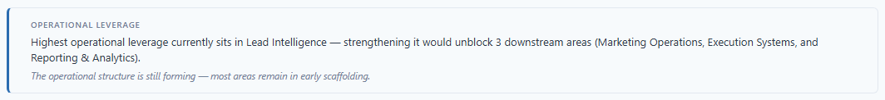
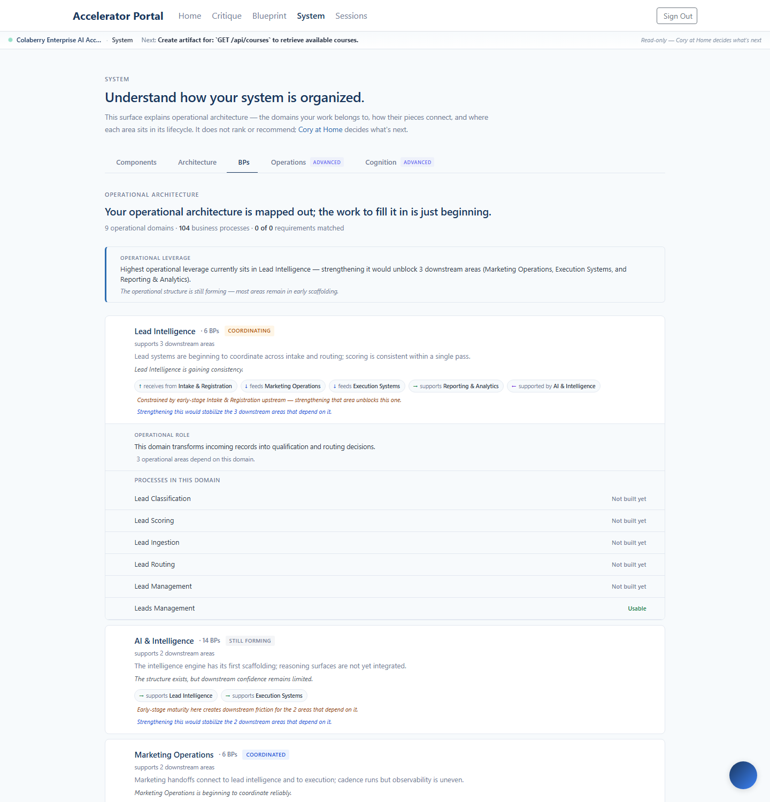

Shipped 2026-05-15 to enterprise.colaberry.ai
(commit e3ec648). Five surgical changes turn the System
BPs surface from a list-of-buckets into a priority topology — the
horizontal flow strip is gone, the stack sorts itself around Cory's
current priority, dependency linkage is visible without a graph
engine, and the BP-line vocabulary stops shouting.
The flow strip compressed all domains into a horizontally-scrolling header. Operator feedback approved removal: it created navigation friction without adding meaning the domain stack didn't already carry. Gone. The architecture headline + leverage block sit at top; the domain stack now serves both navigation and overview.
buildFlowStops import + flowStops memo (dead code after the strip removal)LIFECYCLE_TONE + trustLabel imports from BPDomainSurface (only used by the strip)The classifier's canonical order put domains in operational-flow sequence (AI & Intelligence, Intake, Lead Intelligence, …). The new sorter reorganizes around current operational priority. In the capture above, Lead Intelligence is now first (was 3rd canonically) because its leverage score (downstreamCount × maturityHeadroom = 3 × 2 = 6) is the highest. AI & Intelligence sits second (14 BPs, 2 downstream, also high). Reporting falls to the bottom (downstream 0, leverage 0).
| Sort priority | Tier | Example |
|---|---|---|
| 1 | Cory's current priority domain | Matched via next_action.metadata.bp_id or keyword on title |
| 2 | Operator's focus domain | From memory.lastBpDomain (the domain you last engaged on System) |
| 3 | Leverage score descending | downstreamCount × maturityHeadroom |
| 4 | Canonical orderIndex (tiebreak) | Stable — same state → same order, no shifty re-renders |
When Cory's current next_action can be mapped to a
specific domain, three things happen:
Honest disclosure: the production project's current next_action is
"Create artifact for: GET /api/courses to retrieve
available courses." — that title doesn't keyword-match any
existing BP name (no BP is literally called "GET /api/courses"),
so the matcher correctly returns null and the badge stays
silent on today's capture. Below is the mockup of what would
render when Cory's priority does map (e.g. an action titled
"Strengthen Lead Routing for accelerator cohorts" matching the
"Lead Routing" BP inside Lead Intelligence):
And here is the actual leverage block as it renders today, with the Why-this-matters line correctly silent because no priority match:

The harsh all-caps treatment on every BP row read like a stock-take label. Each row's word is now sentence-case, with regular letter-spacing.
| Before | After |
|---|---|
UNBUILT | Not built yet |
EARLY | Early |
FORMING | Forming |
USABLE | Usable |

The prompt's "no graph chaos" rule was the load-bearing constraint. Audit confirms the implementation holds it:
| Forbidden by the prompt | What I did instead |
|---|---|
| Node graph engine | No D3, no vis.js, no react-flow. No SVG. Dependency linkage = subtle left-border accent only. |
| Architecture canvas | Plain HTML/CSS stack of section elements. No canvas. |
| Dependency spaghetti | No lines drawn anywhere. Linkage is read by color, not traced by eye. |
| Observability map | No telemetry feed added. The "Why this matters" sentence reads observationally, not as a status display. |
| Visual chaos | Domain stack still calm. One badge added (CURRENT PRIORITY), one accent border, one inline sentence in the leverage block. |
| New motion | Zero. The existing 1.7s navigation pulse from the prior Causality sprint is untouched. |
Net stats: 6 files (3 new — 2 utils + 1 test), 261 tests passing across 8 suites (19 new). No backend changes, no new endpoints, no graph library, no new component.
What's deliberately deferred: